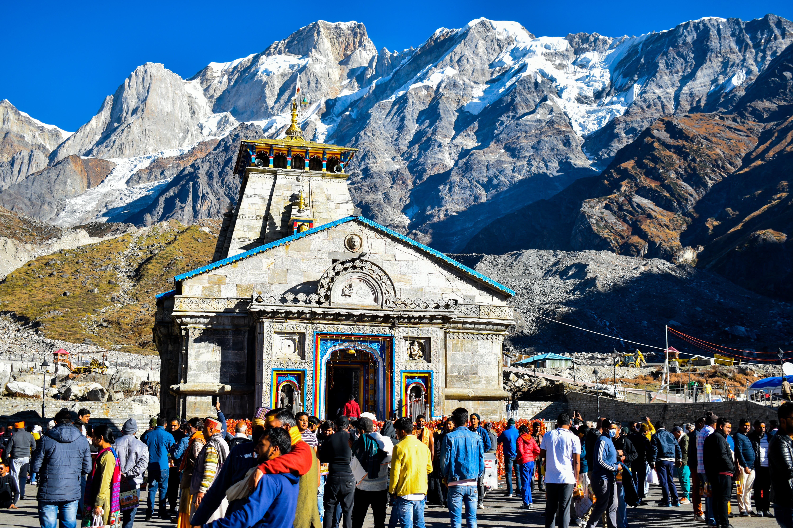
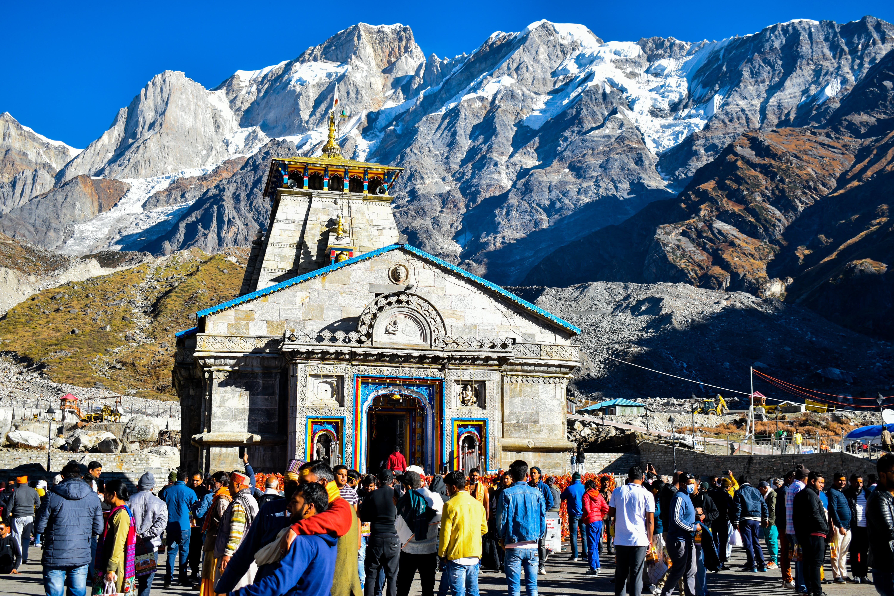

About Kedarnath
Kedarnath, a popular Hindu temple, tucked away in the lap of Garhwal Himalayas, some 221 km from Rishikesh in Uttarakhand, is one of the twelve Jyotirlinga temples of Lord Shiva. Lying against the backdrop of the magnificent Kedarnath Mandir Range, at an altitude of 3580 meters, the splendid Kedarnath Dham is where the devotees come seeking the blessings of Lord Shiva. Kedarnath Mandir is said to have been constructed by Adi Shankaracharya in the 8th century A.D. The nearby flowing Mandakini River, mesmerizing vistas and splendid sceneries in the form of the snow-clad mountains, rhododendron forests, and salubrious environment make Kedarnath Dham Yatra, a tranquil and picturesque place to be at.
The Kedarnath Temple opens every year in the month of April/May for the devotees and closes in winter around the third week of November. Thus, the temple is shut down for six months every year during which prayers to deity of Lord Shiva continues at Omkareshwar Temple in Ukhimath. The dates for opening date of Shri Kedarnath Temple is announced by the priests on the auspicious day of Maha Shivaratri. This year in 2023, Kedarnath Temple shall open on 25 April 2022.
The sacred shrine of Kedarnath is said to have been built in the 8th century AD by Adi Shankaracharya at the place adjacent to a spot where the Pandavas of the Mahabharata fame are believed to have constructed a temple. The most popular legend of Kedarnath takes us to the time of Pandavas who after killing their half-brothers, Kauravas in the infamous war were seeking forgiveness from Lord Shiva on the advice of Lord Krishna. It was in Guptkashi that they could spot Lord Shiva who was hiding from them disguised in the form of Nandi, the bull. But one of the Pandavas, Bheema could identify Lord Shiva and chased to only catch him through his tail, while the rest of the body vanished, through a secret cave underneath the ground.
There are more than 200 shrines dedicated to Lord Shiva in Chamoli district of Uttarakhand itself, the most important one is Kedarnath. According to legend, the Pandavas after having won over the Kauravas in the Kurukshetra war, felt guilty of having killed their own Kith and Kin and sought blessings of Lord Shiva for redemption. He eluded them repeatedly and while fleeing took refuge at Kedarnath in the form of a bafellow.
To fill the Trip Booking Form Click Here.
For more detailed information, you can visit Wikipedia.